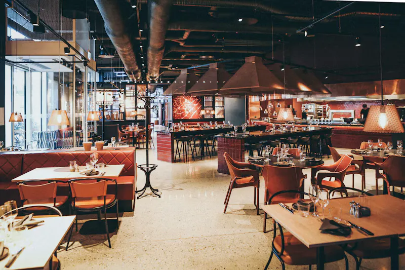
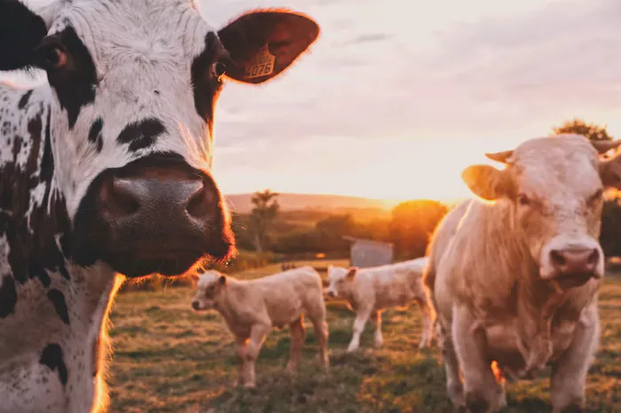
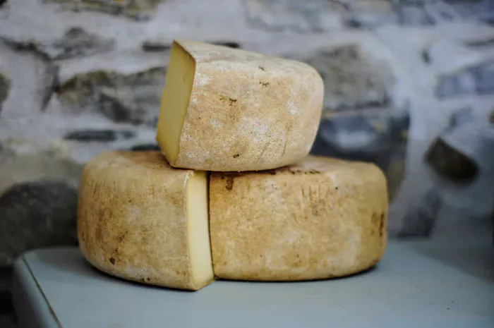
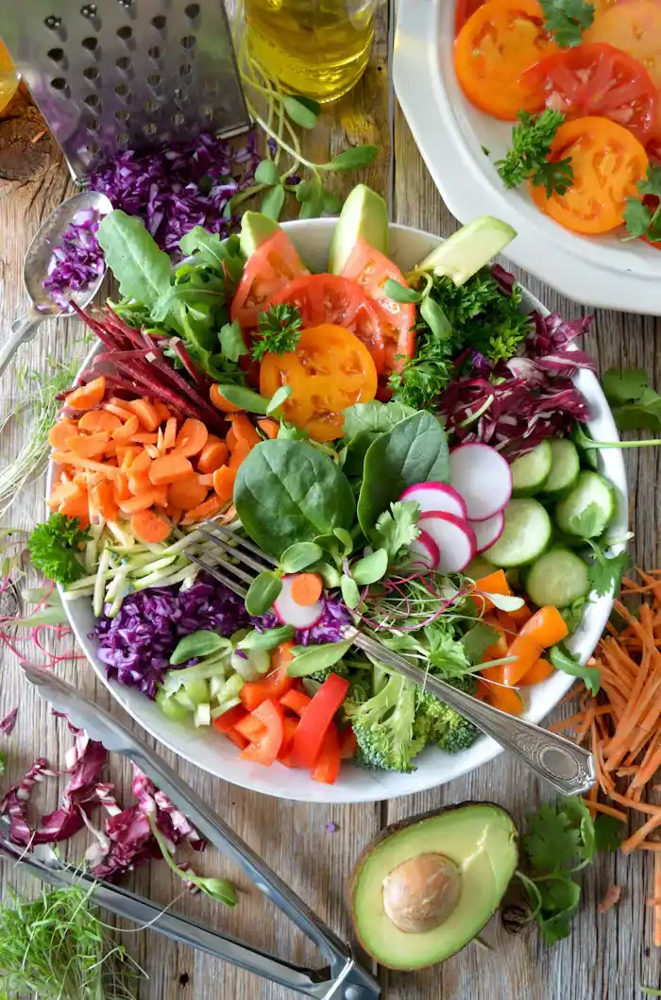
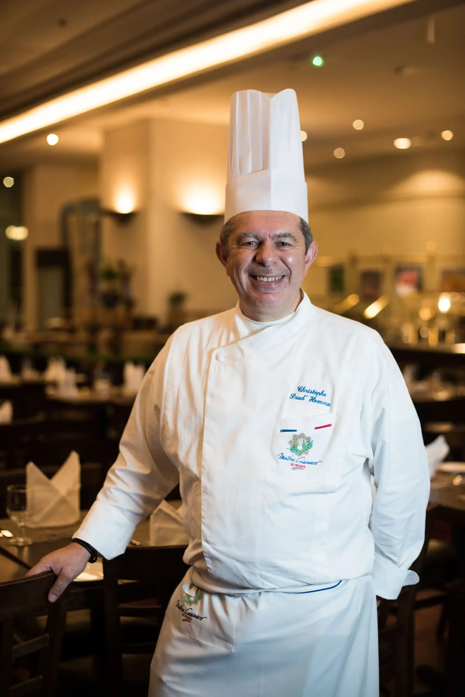
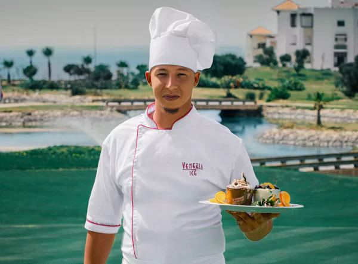
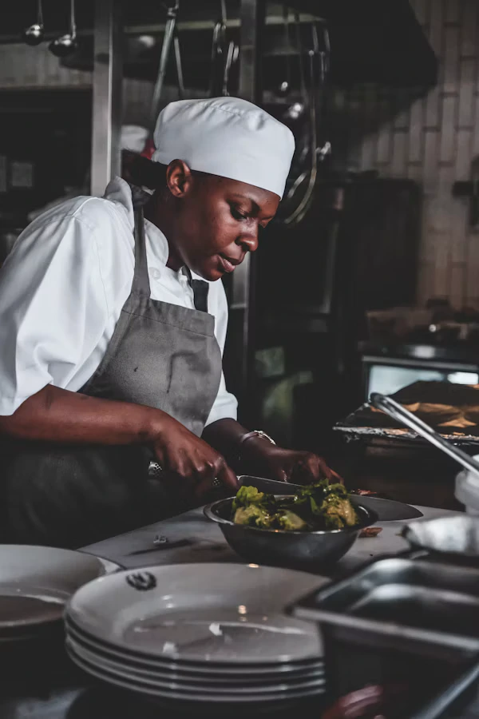

When Chef Marcus Vance and Master Pizzaiola Elena Rossi opened a small weekend pitch in Covent Garden Piazza in 2015, they had one shared conviction: fast-casual food deserved the same ingredient integrity and technique as Michelin-starred dining rooms.
Today, at 24 Covent Garden Piazza, we still mill our own heritage grain blends, butcher whole grass-fed Yorkshire beef cuts in-house, and stoke our brick ovens with kiln-dried English oak every single morning.
From pickles to brioche & gelato.
Free-range British family farms.
We cook over British white oak and smoking cast iron to impart natural smokiness that gas broilers simply cannot replicate.
Our sourdough bases ferment for 48 hours in temperature-controlled vaults, creating a light, crisp, and digestible crust.
Over 90% of our dairy, beef, and seasonal greens travel less than 75 miles from farm gate to our Covent Garden kitchen.
Whether you are grabbing a quick lunch or celebrating an anniversary, every guest is welcomed like family at our table.
Launched with a hand-built clay oven and three signature sourdough pizzas, selling out 300 dough balls every Saturday.
Moved into our permanent two-storey brick dining room and introduced our dry-aged British Wagyu smash burger line.
Partnered directly with 18 family farms in Kent, Somerset, and Yorkshire and transitioned to 100% compostable delivery packaging.
Serving over 18,000 happy diners monthly with 14 UK kitchens while maintaining small-batch artisanal preparation.

Suppliers of our 100% grass-fed, 35-day dry-aged Wagyu and Hereford beef cuts, raised on wildflower meadow grass.

Artisanal cheesemakers crafting our cave-aged Vintage Somerset Cheddar and creamy organic fior di latte mozzarella.

Harvesting heirloom tomatoes, sweet baby basil, wild rocket, and Scotch bonnet chilies delivered fresh each morning.
Crowned Best Signature Wagyu Burger in London for our Smoky Truffle Stack.
Awarded Gold for our 48-hour wild-fermented Neapolitan sourdough crust.
Highest 3-Star rating for ethical British sourcing and zero-waste kitchen operations.
Voted #1 Covent Garden Casual Dining Spot by over 25,000 London readers.

"Our Himalayan salt chamber ages every ribeye and chuck primal to peak tenderness."
35-Day Dry Aging
"Managing a 450°C oak fire is a living art—every pizza gets kissed by real flame."
Oak-Fired Baking
"From smoked garlic aioli to fermented chili honey, every condiment is crafted from scratch."
Artisan Sauces"We pair bold flame-cooked food with small-batch London craft ales and botanical sodas."
Craft PairingsGreat food should nourish both our community and the land that grows it. Every Stackly kitchen runs on 100% renewable UK wind power and closed-loop composting.
Explore Sustainable MenuAll takeaway boxes and cups are plant-based and home-compostable within 90 days.
Drastically cutting food miles by partnering directly with Home Counties farms.
Surplus dough and prep trimmings are converted into bio-energy or donated locally.
Supporting London food banks with freshly prepared hot meals every week.